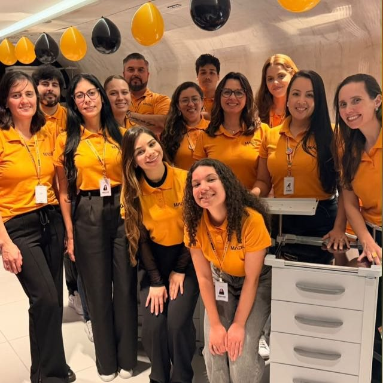

Nosso time
O melhor time da MAD.U
Cada pedido e cada cliente passa pelas mãos de vocês. Estas ferramentas existem para facilitar o dia a dia, mas quem faz a MAD.U acontecer, crescer cada vez mais e ser o que é hoje, é vocês.

- DedicaçãoTodo dia, com o mesmo cuidado, do primeiro ao último atendimento.
- UniãoQuando um precisa, o outro está lá. É assim que a gente chega longe.
- OrgulhoDe cada venda fechada e de cada cliente bem atendido.